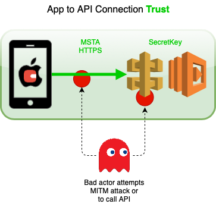
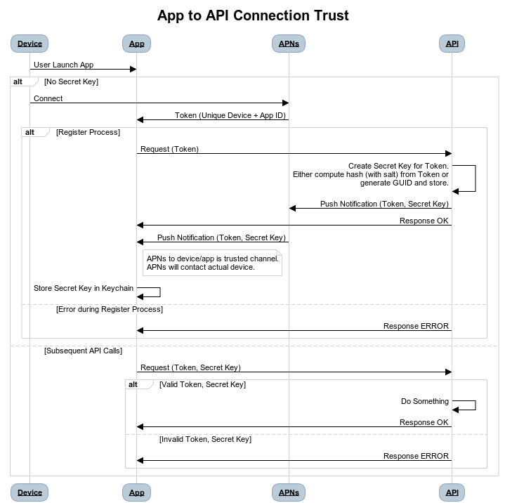

Update August 08, 2020
With the advent of iOS 14.0 there is a better way to do this now, check out App Attest.
Why
I’ve been sporadically building a mobile app as a side project. For years. Yes, years. I’ve been building it for a few reasons. One of them is that it’s a way to escape and relax. Another is that it’s a way to stay curious and keep learning. The rest of the reasons and the mobile app however is a post for another time. Let’s get to this post.
As part of building the mobile app I needed to retrieve weather data for the users current location. A design decision I made is that the mobile app is fully native to the iOS platform and Apple ecosystem. Therefore one constraint is that I didn’t want to introduce a separate identity system that would have impacted the user experience, and also meant I had to deal with the corresponding security concerns. I wanted a way to retrieve the weather data in the most trusted way possible - to respect the user, their data (current location), and hence their privacy.
Solution
Here’s the solution that I designed and built with full credit to Graeme Foster for giving me the concept for the critical part - how to secure the app to the API.

The solution is as follows:
-
Part 1: HTTPS and MSTA: When calling the API from the app implement SSL/TLS (no brainer), but more importantly MSTA (Manual Server Trust Authentication), i.e. SSL Pinning, to prevent MITM (Man In The Middle) attacks. Don’t you love acronyms!
-
Part 2: Secure App to API: When calling the API from the app implement a trusted connection - this involves the app ‘registering’ with the API and being given a SecretKey via a trusted secure channel, that it uses on subsequent API calls. See APNs (Apple Push Notification service) which I use for this, and explain in more detail below.
APNs delivery of remote notifications comes with some pretty heavy disclaimers in the Apple documentation linked to above, but I still decided to use it to implement the second part of the connection trust because:
-
The pattern only relies on using the remote notification occasionally, i.e. when the device token changes.
-
The app feature is optional - it reduces the user experience slightly, but it doesn’t really matter if it doesn’t work. For example, the user could decide to not give the app notification permission.
-
It’s an Apple built and operated method to deliver data to an app on a device via a trusted secure channel.
The following two sections go into detail on how to implement the two parts of the solution.
Note that only simplified non-production code snippets are shown for brevity. This is not industrialised and tested code.
MSTA (Manual Server Trust Authentication)
MSTA is pretty simple when calling APIs using the standard Foundation URLSession request. It may be easier with a third party library, but I prefer to minimise use of dependencies.
See the Apple documentation Performing Manual Server Trust Authentication which clearly documents when and how you can perform MSTA for this scenario.
You want to reject credentials that would otherwise be accepted by the system. For example, you want to “pin” your app to a set of specific keys or certificates under your control, rather than accept any valid credential.
Here is a Swift code snippet that performs the MSTA. It has the API host hard-coded to 192.168.0.7, i.e. the API is local.
struct Certificates {
static let localhost = Certificates.certificate(filename: "localhost")
private static func certificate(filename: String) -> SecCertificate {
let filePath = Bundle.main.path(forResource: filename, ofType: "der")!
let data = try! Data(contentsOf: URL(fileURLWithPath: filePath))
let certificate = SecCertificateCreateWithData(nil, data as CFData)!
return certificate
}
}
extension APIHelper: URLSessionDelegate {
func urlSession(_ session: URLSession,
didReceive challenge: URLAuthenticationChallenge,
completionHandler: @escaping (URLSession.AuthChallengeDisposition, URLCredential?) -> Void) {
let protectionSpace = challenge.protectionSpace
// 1
guard protectionSpace.authenticationMethod ==
NSURLAuthenticationMethodServerTrust,
protectionSpace.host.contains("192.168.0.7") else {
completionHandler(.performDefaultHandling, nil)
return
}
// 2
guard let serverTrust = protectionSpace.serverTrust else {
completionHandler(.performDefaultHandling, nil)
return
}
// 3
if checkValidity(of: serverTrust) {
let credential = URLCredential(trust: serverTrust)
completionHandler(.useCredential, credential)
} else {
completionHandler(.cancelAuthenticationChallenge, nil)
}
}
func checkValidity(of: SecTrust) -> Bool {
let bundleCert = Certificates.localhost
let serverCert = SecTrustGetCertificateAtIndex(of, 0)
let bundleCertData = SecCertificateCopyData(bundleCert) as NSData
let serverCertData = SecCertificateCopyData(serverCert!) as NSData
if !serverCertData.isEqual(to: bundleCertData as Data) {
return false
}
return true
}
}And here is an explainer of what’s happening in the code snippet:
-
The challenge type is server trust, and not some other kind of challenge. The challenge’s host name matches the host that you want to perform manual credential evaluation for.
-
Attempt to get the serverTrust property from the protection space. Fall back to default handling if the property is nil.
-
Pass the server trust to a private helper method checkValidity(of:) that compares the certificate in the server trust to known-good values stored in the app bundle.
I also found the following tutorial Preventing Man-in-the-Middle Attacks in iOS with SSL Pinning useful to understand how to retrieve the certificate from the API server and add it to the Xcode project.
The following terminal snippet copies the certificate output to openssl x509, specifies DER encoding and outputs it to a new file named localhost.der.
$ openssl s_client -connect 192.168.0.7:5001 </dev/null \
| openssl x509 -outform DER -out localhost.derSecure App to API
After I implemented MSTA, it was time to build the second part of the solution. Here’s a sequence diagram showing detail of the interactions of the components.

The following sections show code snippets for how I implemented the main steps in the register process, and then finally authenticating the device/app on subsequent API calls.
Register - App: Request
The first step is to register the device with the API. You do this from the didRegisterForRemoteNotificationsWithDeviceToken method in AppDelegate.swift.
func application(_ application: UIApplication,
didRegisterForRemoteNotificationsWithDeviceToken deviceToken: Data) {
deviceTokenEncoded = deviceToken.hexEncodedString()
_ = APIHelper.register(deviceToken: deviceTokenEncoded)
}
{% endhighlight %}
Here's how you turn the ```deviceToken``` as ```Data``` into an API friendly hex string as an extension.
{% highlight swift %}
extension Data {
struct HexEncodingOptions: OptionSet {
let rawValue: Int
static let upperCase = HexEncodingOptions(rawValue: 1 << 0)
}
func hexEncodedString(options: HexEncodingOptions = []) -> String {
let format = options.contains(.upperCase) ? "%02hhX" : "%02hhx"
return map { String(format: format, $0) }.joined()
}
}Register - API: Create Secret Key for Token, Send Push Notification
The next step in the register process is to create the SecretKey from the Token, and send the push notification. I chose to build the API as an AWS Lambda ASP.NET Core Web API project, and use AWS SNS (Simple Notification Service) to send the push notification, so here’s a code snippet from the RegisterController.cs class.
[HttpPost]
public async Task<ActionResult<Response>> PostAsync(RegisterRequest registerRequest)
{
...
try
{
String secretKey = Hash.Create(registerRequest.Token, Secrets.SecretKeySalt);
await RegisterWithSNS(AWSAppSettings.SNSApplicationARN, registerRequest.Token);
await Publish(secretKey);
}
catch(Exception e)
...Here’s how I hashed the token with a salt.
public static string Create(string value, string salt)
{
var valueBytes = KeyDerivation.Pbkdf2(
password: value,
salt: Encoding.UTF8.GetBytes(salt),
prf: KeyDerivationPrf.HMACSHA512,
iterationCount: 10000,
numBytesRequested: 256 / 8);
return Convert.ToBase64String(valueBytes);
}Register - App: Receive Push Notification
The last step in the register process is to accept the SecretKey from APNs in the app, and securely store both the Token and SecretKey in the Keychain for use on subsequent API calls. Here’s a code snippet from the didReceiveRemoteNotification method in AppDelegate.swift.
func application(_ application: UIApplication,
didReceiveRemoteNotification userInfo: [AnyHashable : Any],
fetchCompletionHandler completionHandler: @escaping (UIBackgroundFetchResult) -> Void) {
if let deviceToken = deviceTokenEncoded,
let secretKey = userInfo["secretKey"] as? String {
if KeychainHelper.get(account: deviceToken) == nil {
_ = KeychainHelper.add(account: deviceToken, password: secretKey)
} else {
_ = KeychainHelper.update(account: deviceToken, password: secretKey)
}
}
}Subsequent API Calls
Once the Register Process has been done, this is how I authenticate the device/app on subsequent API calls.
Here’s a code snippet from the WeatherController.cs class.
[HttpPost]
public async Task<ActionResult<Response>> PostAsync(
WeatherRequest weatherRequest)
{
...
if (!Hash.Validate(
weatherRequest.Token,
Secrets.SecretKeySalt,
weatherRequest.SecretKey)) {
// Authentication failed
...
}
// Authentication successful
...Here’s how Validate works in combination with the has Create method above.
public static bool Validate(string value, string salt, string hash)
=> Create(value, salt) == hash; A Final Note
This article is concerned with respecting the user, their data, and hence their privacy. Processing and storing user data securely is not easy.
If you are building a mobile app to provide an experience, start from the user’s perspective and strongly assess what user data you need to process and store, and how you should do it.
If you need to store data for a backup, sync across devices or sharing to other users, Apple (and others) provide increasingly capable Backend as a Service (BaaS) offerings.